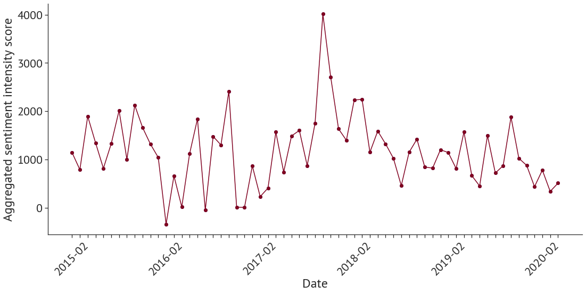
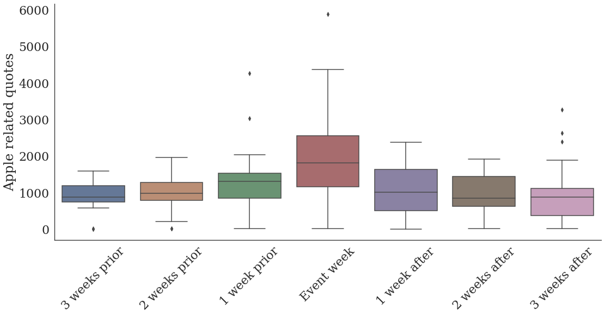
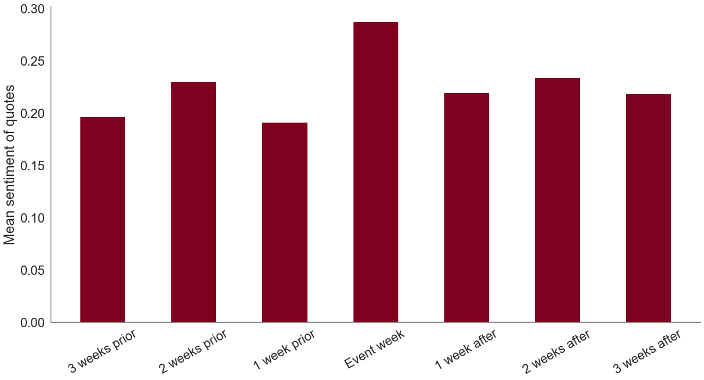
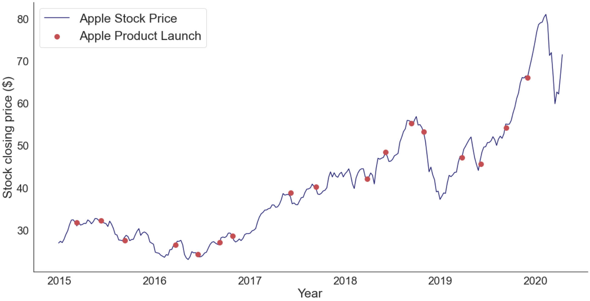
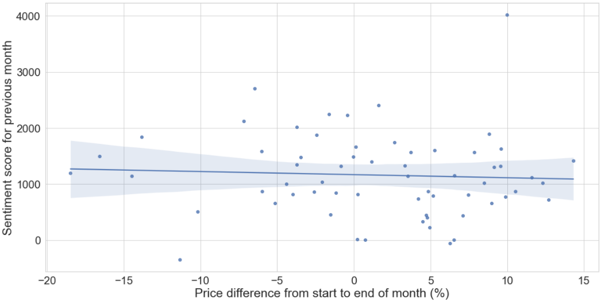
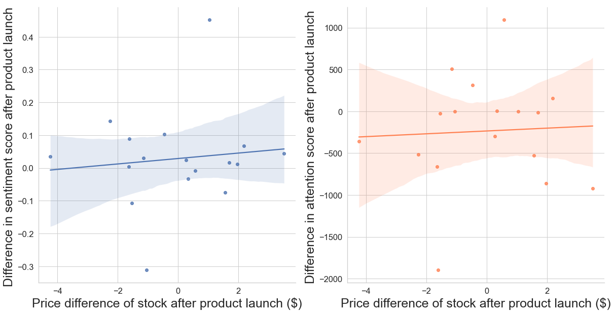

---
# Feel free to add content and custom Front Matter to this file.
# To modify the layout, see https://jekyllrb.com/docs/themes/#overriding-theme-defaults
layout: default
classes:
- wide
#permalink: /
# title: "A (NOT SO) RANDOM WALK DOWN WALLSTREET"
# excerpt: An investigation into whether media coverage affects the stock price of Apple Inc.
# header:
# overlay_image: /assets/images/cover_photo.jpg
# caption: "Photo Credit: [**The Economic Times**](https://economictimes.indiatimes.com/markets/stocks/news/irrational-exuberance-are-we-near-the-shiller-mark-that-can-trigger-pain/articleshow/85265082.cms?from=mdr)"
---
Companies and Media Attention
Stock prices vary significantly from day-today
Some of these fluctuations directly result from physical events affecting the companies. However, media is known to have great influence over how people perceive the world. Therefore, it is plausible that media attention and its wordings influence people's choice to buy or sell a stock, thus influencing the stock price as well.
We want to go beyond the anecdotal
Quotebank, provided by dlab @ EPFL, provides us with tools to investigate media's effect on stock prices on a large scale. Quotebank is a corpus containing nearly 200 million quotations from the English media over the period 2008 - 2020, attributed to their most likely speaker. We have extracted quotes regarding Apple Inc. from 2015 - 2020 and aim to quantify the media's impact on Apple's stock price.
Who even talks about Apple?
Everybody!
Since Steve Jobs' infamous presentation of the first iPhone in 2007, the popularity of Apple products has skyrocketed. Now, everybody has an iPhone. Although this is good news for Apple, we are more interested in who speaks the most about Apple.

Those who most often mention Apple, are people working at Apple
People like Tim Cook (CEO), Steve Jobs (Founder) and Eddy Hue (Senior Vice President) are those who most frequently are mentioned in the media talking about Apple.
All publicity is good publicity - at least for Apple
To determine the contents of quotations about Apple, Python comes stacked with useful libraries. NLTK assigns a value between -1 and 1 to each quote, where -1 is the absolute negative and 1 is the absolute positive. By aggregating the quotes for each month, we can determine the overall attitude towards Apple. This reveals an overwhelmingly positive attitude towards Apple.

The attidude towards Apple is overwhelmingly positive
Very few months land close to zero. Interestingly, the ones which do all appear in 2016. This is the year of the infamous Batterygate scandal, where it was revealed that Apple deliberately slowed down the processors in older iPhone models.
How Apple events draw massive media attention
Apple events are something special. Although Apple doesn't reveal the event date until right before it happens, there is always a certain expectation building in the weeks before each event. It's a peculiar phenomenon, especially considering that the products and release date are known (or more precise: "rumored") weeks, and sometimes even months, in advance.
The figure illustrates how Apple's media attention builds up towards its product events, only to fall back towards the baseline again. A typical product launch for Apple causes a 100% increase in attention.


The media is more positive towards Apple when they launch a new product
By conducting a Mann Whitney U-Test, we found that the general media sentiment towards Apple is significantly higher during event weeks. Not only do media houses give Apple more attention, they also get more positive attention when launching a new product.
The significant increase in positivity could be due to the fact that people connected to Apple get more exposure in the media during this period. With Apple events drawing huge attention, it is natural for the media houses to expose Apple fans, Apple experts and Apple employees to talk about the products. Such people are more inclined to speak positively about Apple. The following quotation illustrates such statements.
It is the most beautiful iPhone we have ever made
~ Tim Cook during a product launch week
Considering the Apple stock
As one of the most successful companies in the world, the Apple stock has skyrocketed the last couple of years. The growth has been exceptional since the Batterygate scandal. In addition, the stock is very volatile. This leads us to believe that there might be a connection between the media's attitude towards Apple and their stock price.

Can last months sentiment be this months gold mine?
No. After conducting a Pearson Correlation Test, we found no statistically significant correlation between the previous month's sentiment and the current month's stock price. Our findings are about as helpful as tossing a coin when predicting the development of a stock price.

Assessing the legitimacy of Matthew McConaughey
Nobody, if you're Warren Buffet or Jimmy Buffet, knows if a stock is gonna go up, down, sideways or in f*cking circles
~ Matthew McConaughey on stock analysts, from the movie The Wolf of Wall Street
The unforgettable quote of a senior broker at Wall Street in the late '80s. Maybe times were different then - maybe not. Considering the previous page, the quote seems to hold - at least in our case. However, we have one more trick up our sleeve. In a final, desperate attempt at getting some groundbreaking results, we will search for a correlation between the stock price and the change in sentiment before and after Apple launches a new product.

Media attention and attitude towards Apple does not explain change in stock prices
Although there can be observed a slight positive correlation in the plots, this does not hold any statistical validity. We have no basis for claiming correlation, least of all causation, between media mentions and the stock price of Apple Inc.
A (very much so) RANDOM WALK STRAIGHT INTO A WALL
Haakon Døssland
Our attempted walk down Wall Street ends abruptly in a stone wall. From our perspective, the market seems detached from reality - at least the reality of the media. Although this wasn't the result we needed, we're pretty confident that it is the result we deserve.
Even though our hopes of solving the market have diminished, our investigation has thought-provoking corrolaries. From the analysis conducted, there are strong indicators that the Apple stock is independant of how the media portrays the company. Considering how much attention fake news has gotten over the past years, maybe it's good that potentially biased sources don't affect such a crucial concept as the practical value of a company.